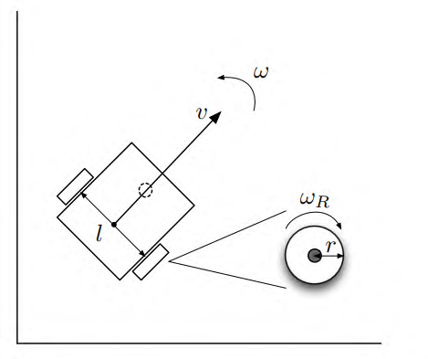
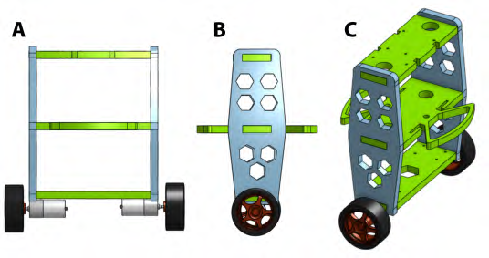
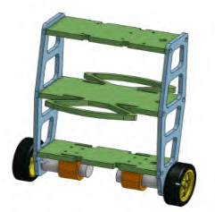
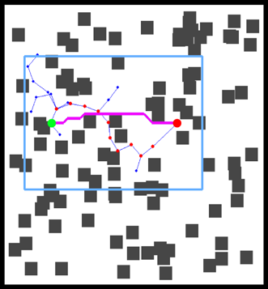

Mouad Boumediene | Postdoctoral Researcher
Postdoctoral researcher specializing in multi-agent pathfinding, deep reinforcement learning, and UAV trajectory planning; former postdoc at SDU MMMI.
Curriculum Vitae [PDF]News
Education
PhD in Automation, University of Skikda, Algeria 2019 – 2023
- Thesis: Contributions to the command of mobile robots; focused on mobile robot pathfinding.
Master’s in Instrumentation, University of Skikda, Algeria 2017 – 2019
Bachelor’s in Electronics Engineering, University of Skikda, Algeria 2014 – 2017
Experience
Postdoctoral Researcher, MMMI – University of Southern Denmark (Odense, Denmark) 2023 – 2024
- Developed multi-robot coordination approaches using deep reinforcement learning.
- Contributed to the 'Swarm Robotics for Industry 4.0' project (Independent Research Fund Denmark, grant 0136-00251B).
- Proposed HM-DRL for distributed MAPF and published it in Applied Intelligence.
- Built Relocation-MAPF to reduce bottlenecks in dense MAPF environments.
Robotics Researcher (PhD Internship), Syddansk Universitet – University of Southern Denmark Feb 2023
- Studied deep RL for AMR swarms in Industry 4.0 settings; contributed under grant 0136-00251B.
Robotics Engineer (Freelance), AiGro Netherlands (remote) 2021 – 2022
- Built a 2D simulator for pathfinding and localization algorithm development for agricultural mobile robots.
- Implemented Kalman filter–based sensor fusion using IMU and GPS; validated with real-world data.
Temporary Lecturer, University of 20 Août 1955 – Skikda, Algeria 2019 – 2022
- Taught advanced signal processing and digital regulation (labs and tutorials).
- Supervised Master’s students’ final-year projects.
Publications
Journal Papers / Conference Proceedings / Preprint

Applied Intelligence, vol. 55, no. 12, pp. 873, 2025.

15th ANNUAL INTERNATIONAL MICRO AIR VEHICLE CONFERENCE AND COMPETITION, 2024.

ICTAEE'23, Laboratory of Automatic of Skikda, 20 Aout 1955 University, Skikda, Algeria, May 2023, pp. 110–117.

ICTAEE, Skikda, Algeria, May 2023, pp. 98–103.

ICTAEE, Skikda, Algeria, May 2023, pp. 200–206.

Journal of Automation, Mobile Robotics and Intelligent Systems, pp. 37-43, 2021.
Skills
-
Python
— Expert · Programming NumPy, PyTorch, TensorFlow, Pandas, Matlab
-
C++
— Advanced · Programming ROS, Gazebo, Git, LaTeX
Contacts
+213 7 93 74 18 90
Zerdezas, 21047 Skikda, Algeria
linkedin.com/in/mouad-boumediene